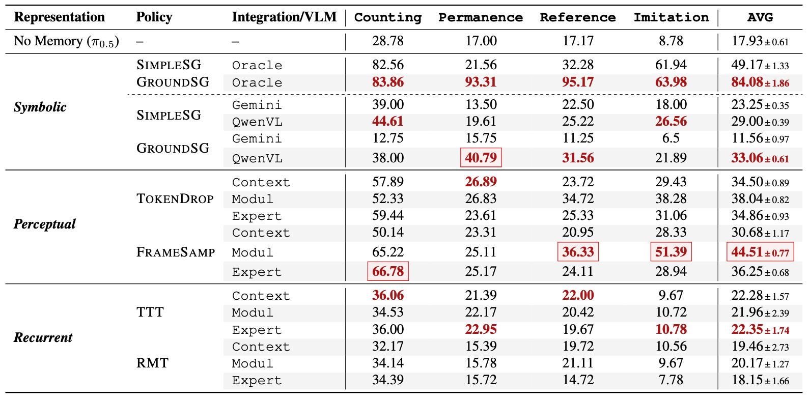
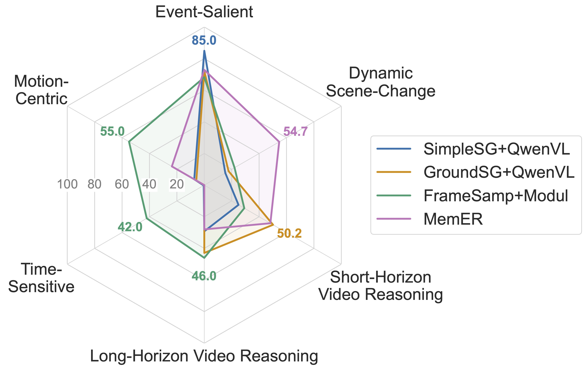
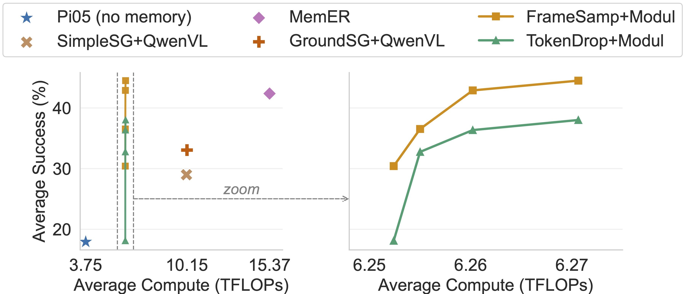
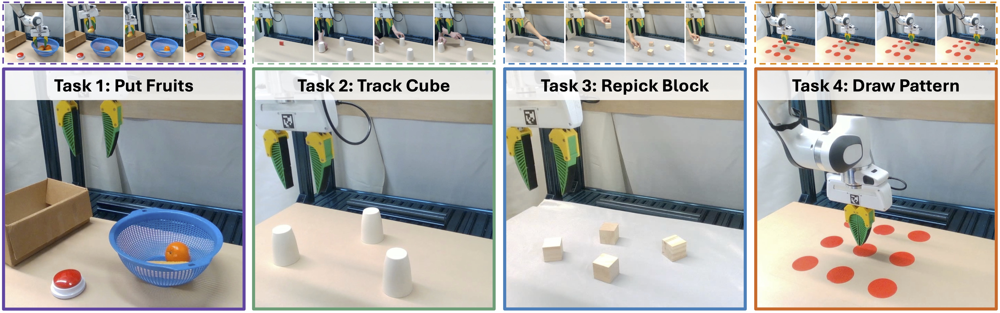

RoboMME Experiments
In our experiments, we fine-tune a total of 14 memory-augmented VLA variants based on π0.5 and prepare 3 different subgoal predictors for symbolic memory:
- Symbolic: SimpleSG (Simple Subgoal) or GroundSG (Grounded Subgoal) combined with
Gemini(prompt-based Gemini-2.5-Pro),QwenVL(fine-tuned Qwen3-VL-4B), orOracle(simulator ground-truth) subgoal predictors → 2 VLA variants × 3 subgoal predictors - Perceptual: TokenDrop (Token dropping) or FrameSamp (Frame sampling) combined with
Context,Modul, orExpertintegration → 2 × 3 = 6 VLA variants - Recurrent: TTT (Test-Time Training) or RMT (Recurrent Memory Transformer) combined with
Context,Modul, orExpertintegration → 2 × 3 = 6 VLA variants
| Memory Representation | Method | Subgoal Predictor | Integration Mechanism |
|---|---|---|---|
| Symbolic | SimpleSG, GroundSG | Gemini, QwenVL, Oracle |
-- |
| Perceptual | TokenDrop, FrameSamp | -- | Context, Modul, Expert |
| Recurrent | TTT, RMT | -- | Context, Modul, Expert |
Naming Convention: Method+Integration Mechanism/Subgoal Predictor, e.g., FrameSamp+Modul or SimpleSG+QwenVL
▶ Q1: Which memory representations and integration mechanisms yield the strongest performance?
Across all MME-VLA variants:
- Memory Representation: Perceptual Memory > Symbolic Memory > Recurrent Memory
- Integration Mechanism: Memory-as-Modulator > Memory-as-Expert > Memory-as-Context
- Within Perceptual Memory: Frame Sampling > Token Dropping
- Within Symbolic Memory: Grounded Subgoal > Simple Subgoal
- Recurrent Memory performs worst likely due to training instability

▶ Q2: How does the effectiveness of different memory designs depend on task characteristics?
Different memory designs provide complementary strengths:
- Symbolic Memory: excels on Event-Salient (e.g., counting) and Short-Horizon Video Reasoning tasks
- Perceptual Memory: excels on Motion-Centric and Time-Sensitive tasks
- MemER (Sridhar et al., 2025): excels on Dynamic Scene-Change tasks due to its reuse of all past keyframe images

To better analyze the effectiveness of memory representations, we group the 16 tasks by their primary functional requirements:

▶ Q3: How does memory affect the efficiency-performance balance of memory-augmented policies?
Perceptual memory achieves the best efficiency-performance balance:
- FrameSamp+
Modul: consistent gains with modest cost increase - GroundSG+
QwenVL: ~3× computation of π0.5 - MemER (Sridhar et al., 2025): ~5× computation of π0.5

▶ Q4: Do the trends observed on RoboMME transfer to real-world robotic manipulation?
Yes. We evaluate four real-world tasks designed to mirror simulation tasks:
- PutFruits → BinFill
- TrackCube → VideoUnmask(Swap)
- RepickBlock → VideoRepick
- DrawPattern → DrawPattern
The results exhibit similar patterns: Symbolic memory performs best on counting (PutFruits), while Perceptual memory excels on motion-centric tasks (DrawPattern). On the remaining tasks, both achieve comparable performance.


▶ Click to view Full Results